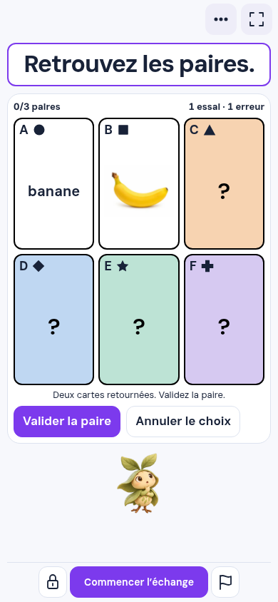
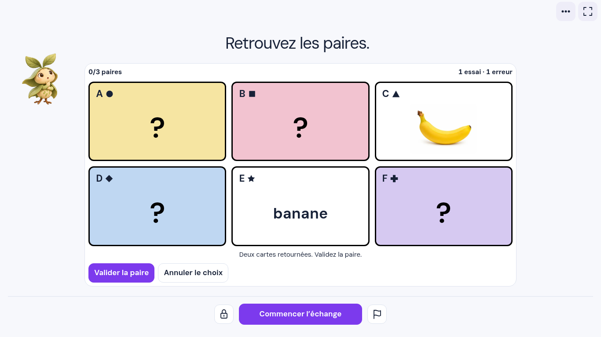
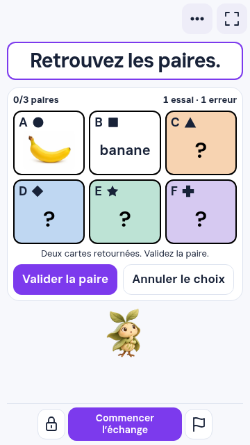

Banques Vocabulaire et Mémory, quatre à six cartes repérées A–F. Deux faces neutres avant validation en Classe ; vérification et suite automatiques en Solo.



Parcours vérifiés avec préchargement, réseau coupé, reprise et nouvelle tentative.